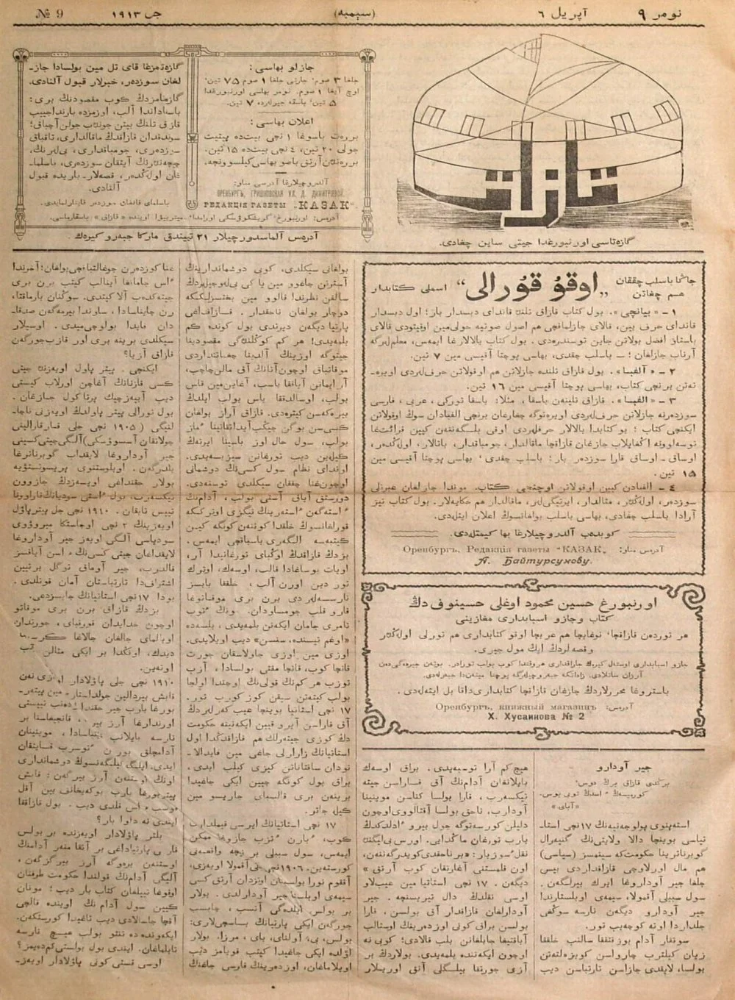
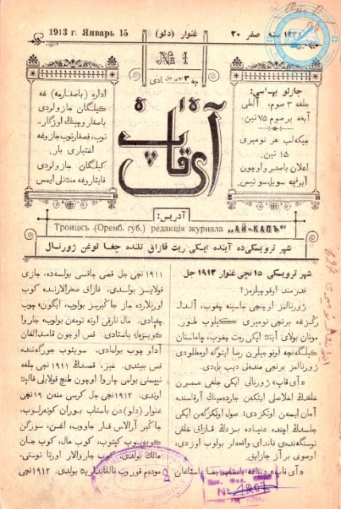
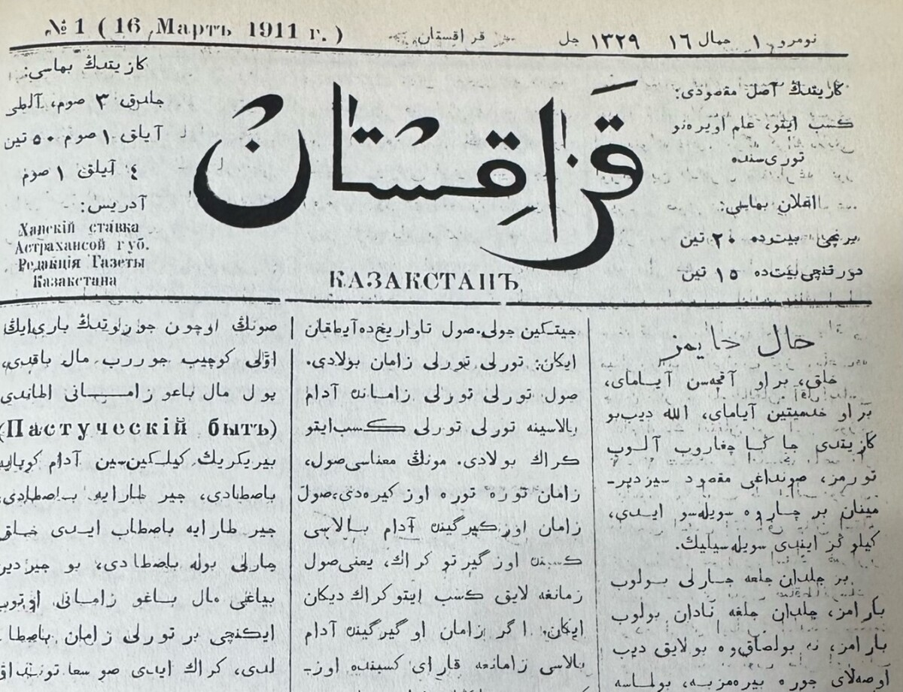

Historical Timeline
Before examining the idea of “surplus land,” it is important to understand how Kazakh political authority and land rights changed under Russian imperial rule.
Formation of the Kazakh Khanate
The Kazakh Khanate was founded, marking an important stage in the formation of Kazakh political identity.
Early Records of Flour and Bread Use
Records appeared mentioning Kazakhs’ use of flour and bread, while Russian peasants began to appear in the western regions.
Abolition of the Middle Zhuz Khanate Authority
The Russian Empire adopted the Statute on Siberian Kirghiz, abolishing the khanate authority of the Middle Zhuz. Here, “Kirghiz” was the term then used by Russians to refer to Kazakhs.
Abolition of the Junior Zhuz Khanate Authority
The Russian Empire adopted related regulations through the Orenburg administration, abolishing the khanate authority of the Junior Zhuz and prohibiting the election of new khans. This date is often used to mark the institutional end of the Kazakh khanate system.

Supplementary Regulations on Resettlement
The 1843 Supplementary Regulations, designed for land-poor peasants with five desiatinas (12.3 acres) or less, allowed them to apply for resettlement and encouraged migration.
Temporary Regulation on the Administration of the Steppe Regions
The 1868 Temporary Regulation on the Administration of the Steppe Regions declared all Kazakh land to be state property of the Russian Empire and provided for its allocation to settlers, including fifteen desyatinas (about 40.5 acres) for those Kazakhs who chose to settle.
Land Survey and the Determination of Surplus Land
Based on the 1843 and 1868 regulations, the Russian Empire began to carry out comprehensive land surveys and to define “surplus land” across the Kazakh steppe.
Establishment of the Alash Autonomy
The Alash Autonomy was established. It sought Kazakh autonomy, land rights, educational reform, rule of law, and cultural development. It also challenged imperial land policies and sought to defend Kazakh land rights.
Establishment of the Kirghiz/Kazakh Autonomous Soviet Socialist Republic
The Soviet regime established the Kirghiz/Kazakh Autonomous Soviet Socialist Republic, and the Alash movement came to an end.
From Imperial Law to Local Debate
These laws created the legal framework for land surveys and the identification of “surplus land.” Yet Kazakh responses in newspapers and journals show that local communities understood these policies not only as administrative reforms, but as a fundamental disruption of the nomadic system itself. They connected land shortage, migration, and changing livelihoods to the deeper erosion of pastoral mobility and seasonal land use.
Kazakh Responses in Newspapers and Journals
Kazakh newspapers, journals, reader letters, and internal news reports show that imperial land policies were not understood only as legal reforms. They were also experienced as a crisis of land loss, blocked mobility, violence, and the deeper disruption of the nomadic system.



Kazakh Print Critiques of Imperial Land Policy
Qazaq: The 1868 Regulation as a “Disease”
“The Kazakh nation is suffering from a very serious illness. This severe illness cannot be cured by schools, nor by religion, and still less by ‘fifteen desyatinas of land.’ The illness is not local but systemic—it affects the whole body. Since 1869, the Kazakhs have been afflicted by this ‘disease’: the 1868 Temporary Regulation.”
Source: Qazaq, “Азып-тозып кетпеске не амал бар?”
Aiqap: The Loss of Good and Poor Land
“The Kazakh nation is in decline: the good land has been taken by Russian peasants, and even the poor land is not left for the Kazakhs to use.”
Source: Aiqap, Issue No. 11.
Together, these passages show that Kazakh writers understood imperial land policy as more than an administrative change. The fixed norm of “fifteen desyatinas” and the transfer of good land to Russian peasants threatened the seasonal mobility on which nomadic life depended.
In this context, “surplus land” was not simply unused space. It was produced through a colonial process that reclassified pastoral landscapes, weakened Kazakh access to pasture and water, and undermined the social and ecological foundations of the nomadic system.
Reader Letters and Local Conflicts over Land and Mobility
Reader letters and internal news reports recorded concrete conflicts between Kazakhs and Russian peasants. These cases show that imperial land policy was experienced in everyday life through violence, accusations of theft, blocked migration routes, passage fees, and unequal treatment by local authorities.
| Journal / Source | Place | Time | Events |
|---|---|---|---|
| Internal News | Aktobe uezd | Aug. 28 | Russians shot three Kazakhs, including village elder Zhunis, son of Qarabala, who intervened while wearing his official badge; seven others were injured. An investigation was ongoing. |
| Qazaq | Seyten village, Semey uezd | Previous issue | Russian peasants killed Kazakhs and reportedly questioned whether any punishment would follow. |
| Qazaq | Terekti volost, Aktobe uezd | Issue 18 | Russians accused Kazakhs of horse theft, surrounded the village, and killed a herder; the accusation was later found to be false. |
| M.D. experience | Zaysan | 1906 | Peasants charged Kazakhs passage fees of 30–40 kopecks for crossing land during migration. |
| M.D. experience | Zaysan | 1907 | Kazakhs were forced to pay for passage; refusal led to armed intimidation, and the author was detained after the dispute. |
| Internal News, H. Sarsekeyev | Zaysan | — | Russians accused Kazakhs of theft, seized horses, and shot the owner; the killer was released on bail. |
These reports reveal how the disruption of nomadic mobility appeared in everyday life. Migration routes became contested spaces, crossing land could require payment, and livestock disputes could escalate into violence. In this sense, the problem of “surplus land” was inseparable from the weakening of Kazakh access to pasture, movement, and legal protection.